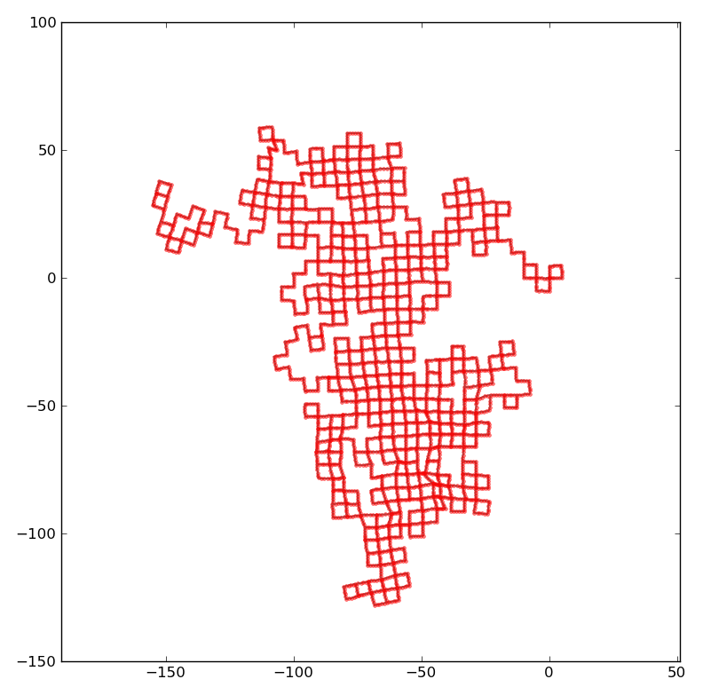

EFPNO¶
EFPNO, (non-imaginative acronym for Euclidean Formalization of Pose Network Optimization) is a Python library that solves the pose network optimization problem. It is entering the RSS2011 SLAM evaluation workshop with the expectation of being the slowest, least precise entry.
This is because it is designed to solve the global pose optimization, using only the pose-to-pose constraints. Contrary to most methods, the optimization step is not iterative, but rather the solution is found in one shot. (There is, however, an initial graph simplification phase which is iterative).
Status as of 2011-06-23:
- Documentation (a technical report) is being written, check back soon :-).
- Right now, it is written in Python and takes 2-3 minutes to run on these examples. I think it could get easily under 1 second if written in C++ (we will see).
- This code is alpha quality. There are many “dead” parts of code (something tried but abandoned) so looking into it right now could be a bit confusing.
Acknowledgments: Thanks to all the researchers who make their code and datasets freely available. The data/ directory contains 3 datasets on which I tested this code.These datasets float around so it is difficult for me to credit all the people involved. I think the original Intel dataset was taken by Dirk Haehnel in Washington, but I don’t know who ran the scan-matching code and loop closure detection; probably our friends in Freiburg. The synthetic datasets were generated by Edwin Olson, but perhaps they were converted in the current form by someone else. Let me know if you know of any correction.
Related software: In general, the OpenSLAM repository should have the largest collection. iSAM, g2o, HOG-Man, are examples of recent iterative optimization methods for solving the same problem.
Examples¶
This is the output of the algorithm using the default parameters (same parameters for all graphs). Note that the result is “decent” but nowhere near the precision of iterative methods.
This is a visualization of the input and the output. Note that the visualization of the input is misleading, because the algorithm does not use the initial pose given to the nodes, but only the pose-to-pose constraints.
The manhattanOlson3500 dataset
EFPNO's one-shot solution

The w10000 dataset
EFPNO's one-shot solution
Downloading¶
For downloading the branch to be used for RSS2011, use this Git command:
$ git clone -b RSS2011 git://github.com/AndreaCensi/efpno.git
Otherwise, simply use:
$ git clone git://github.com/AndreaCensi/efpno.git
to download a more current version.
Installation instructions¶
These installation instructions have been tested on Ubuntu 10.04.
First, install the requirements that come as Ubuntu packages:
$ sudo apt-get install python-pip python-numpy python-scipy git-core python-nose
Then, install a few Python packages using pip:
$ sudo pip install --upgrade PyContracts
$ sudo pip install --upgrade PyGeometry
$ sudo pip install --upgrade RepRep
At this point, install the executables:
$ cd efpno
$ sudo python setup.py develop
Overview of executables included¶
Various executable are installed.
Script efpno_slam_eval¶
efpno_slam_eval implements the SLAM evaluation protocol. It is very slow (~2 minutes for a graph with 3500 nodes). It only makes sense to analyze it in batch mode.
This is an example of using the evaluation program:
evaluation `which efpno_slam_eval` /data/manhattanOlson3500.txt 0 > log
Script efpno_solve¶
efpno_solve reads a graph and optimizes it. Usage:
efpno_solve [options] logfile > output
Script efpno_simplify¶
efpno_simplify only does the simplification step. Usage:
efpno_simplify [options] logfile > output
Script efpno_plot¶
efpno_plot creates figures and a short report. Usage:
efpno_plot [options] --outdir OUTPUT_DIR/ logfile